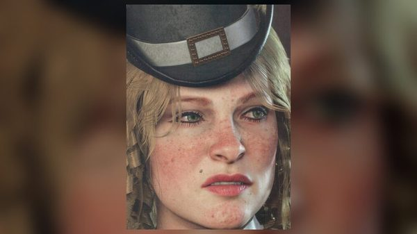
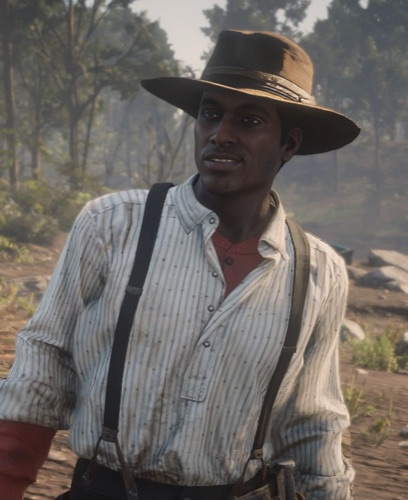
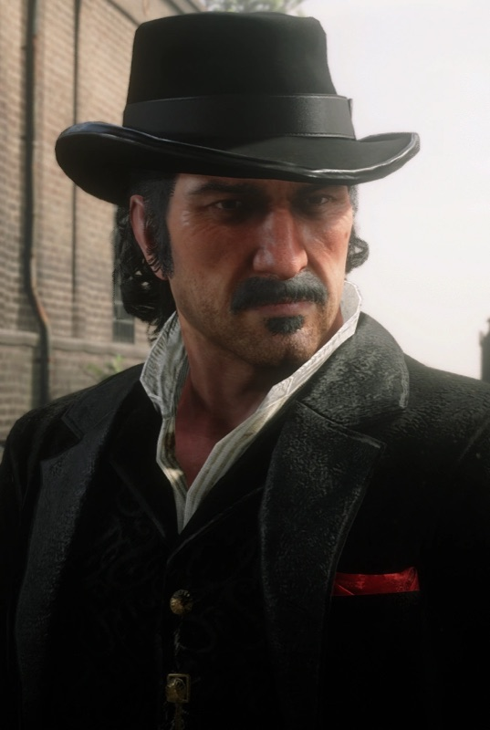
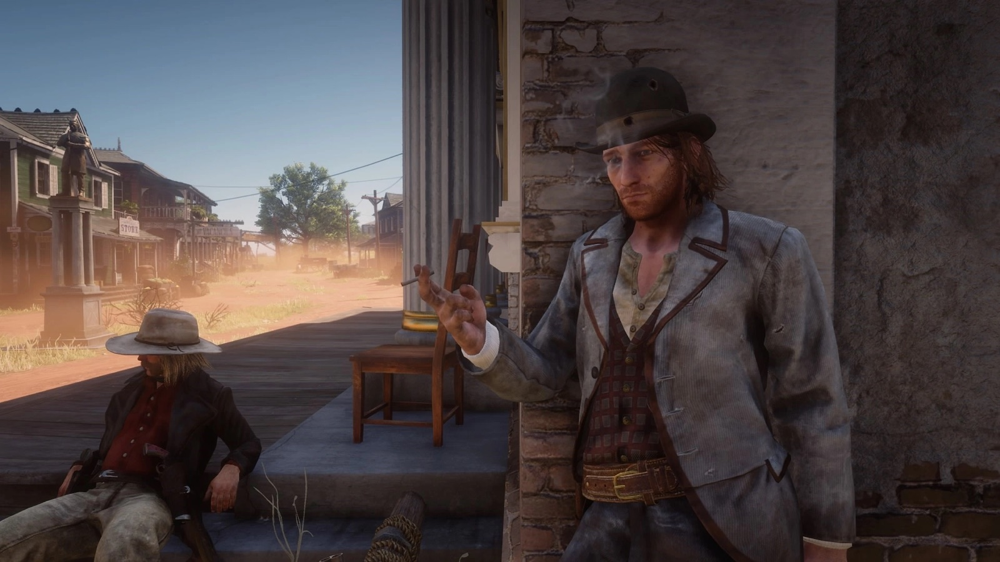

Personnage · Gang Van der Linde
Sean MacGuire
Sean MacGuire est un jeune voleur irlandais du gang Van der Linde dans Red Dead Redemption 2. Rockstar le présente comme l'héritier d'une longue lignée de criminels et de dissidents politiques.
Il est abattu à Rhodes en 1899, dans une embuscade montée par la famille Gray.
- Origine
- Irlandais
- Mort
- 1899, Rhodes
- Statut
- Décédé
- Affiliation
- Gang Van der Linde
- Rôle
- Voleur et braqueur
- Voix
- Michael Mellamphy
- Jeux
- Red Dead Redemption 2
Biographie
Origines
D'après le guide officiel, le père de Sean était recherché par les autorités ; il s'est réfugié en Amérique avec son fils, où il a été rattrapé et tué. Sean entre dans le gang après avoir raté le vol de la montre de gousset de Dutch dans une ruelle.
Capture et retour
Séparé du gang après le braquage raté de Blackwater, Sean est capturé par des chasseurs de primes. Au chapitre 2, dans "The First Shall Be Last", Arthur, Charles et Javier le libèrent, pendant que Josiah Trelawny fait diversion. Le camp fête son retour, et c'est ce soir-là qu'il entame une liaison avec Karen Jones.
Il participe ensuite avec Arthur, John et Charles à l'attaque de train du gang, dans "Pouring Forth Oil IV".
La guerre des Gray et sa mort
Au chapitre 3, le gang joue sur les deux tableaux de la guerre entre les Gray et les Braithwaite. Dans "The Fine Joys of Tobacco", Sean et Arthur incendient les champs de tabac des Gray pour le compte de Catherine Braithwaite.
Dans "A Short Walk in a Pretty Town", les Gray proposent un travail au gang à Rhodes. C'est un piège. Alors que Sean remonte la rue avec Arthur, Bill et Micah, un tireur embusqué l'atteint à la tête et le tue sur le coup. Après sa mort, Karen se met à boire.
Relations

Karen Jones
Entame une liaison avec lui après son sauvetage.

Arthur Morgan
Le libère, puis incendie avec lui les champs des Gray.

Lenny Summers
Autre jeune membre du gang.

Dutch van der Linde
L'accueille après que Sean a raté le vol de sa montre.
Conception et interprétation
Sean est interprété par Michael "Mick" Mellamphy, qui assure la voix et la capture de mouvement. Selon une table ronde de la distribution à la SacAnime, en juin 2019, Mellamphy est le second acteur à avoir tenu le rôle, en remplacement d'un premier interprète en cours de production.
En janvier 2021, Mellamphy, Roger Clark (Arthur) et Penny O'Brien (Molly O'Shea) participent à une table ronde en ligne du First Irish Festival de l'Origin Theatre, rapportée par TheGamer. Il raconte avoir demandé à Benjamin Byron Davis, l'interprète de Dutch, si Sean faisait vraiment partie du gang, et s'être vu répondre qu'il en faisait bien partie. Sur l'accent, il explique que Sean lui a paru d'emblée très dublinois, issu du peuple et blagueur.
Il confie aussi avoir manqué, en tant que joueur, la fête organisée pour le retour de Sean : parti chasser avec Arthur, il est revenu au camp le lendemain matin, au milieu d'une troupe gueule de bois.
Accueil
En novembre 2018, Eurogamer publie un article de Cian Maher qui fait de Sean le meilleur personnage irlandais de l'histoire du jeu vidéo. Il le place au-dessus des précédents personnages irlandais de Rockstar, dont Irish dans Red Dead Redemption et la famille McReary dans Grand Theft Auto IV, et salue l'ancrage historique de son passé.
Galerie
